HSC // CASE FILE #7742-A
SUBJECT STORY
A human mind. A machine advantage.
“He doesn't just hack systems. He thinks inside them.”

HSC GLOBAL THREAT DATABASE // ACTIVE WARRANTS
Select a subject portrait to open the 3D scan. Select the red bounty button to open that subject's case story.
3D VIEWER
HSC // CASE FILE #7742-A
A human mind. A machine advantage.
“He doesn't just hack systems. He thinks inside them.”
TIMELINE // KEY EVENTS
Joined advanced systems research and human-machine interface development.
Underwent an unauthorized cybernetic integration procedure and vanished from official records.
Linked to repeated infrastructure and data-center intrusions across multiple districts.
Security records tie the subject to a coordinated breach of an HSC surveillance hub.
Current location unknown. False identities and synthetic biometrics are suspected.
CHARGES // ACTIVE WARRANTS
INCIDENT NOTES // FIELD REPORTS
EVIDENCE // RECOVERED
INSPIRATION // CREATIVE DNA
Human Systems Check combines the atmosphere of Cyberpunk 2077 with the human-versus-machine tension associated with The Terminator, then reshapes those ideas into its own futuristic police-file universe.
WORLD INSPIRATION
The world of HSC is inspired by Cyberpunk's vision of a dense future city where advanced technology is built into everyday life. Neon interfaces, corporate power, surveillance networks, cybernetic upgrades, digital crime, and the gap between powerful institutions and ordinary people all influence the site's setting.
HSC takes those ideas and turns them into a law-enforcement database: every screen feels like part of a city-wide security network tracking augmented people, dangerous technology, and crimes that can happen both on the street and inside connected systems.
CHARACTER INSPIRATION
Subject #7742-A connects to The Terminator through the visual idea of a person caught between human and machine. His cybernetic side makes him look engineered, relentless, and dangerous, while the human side keeps his choices personal instead of purely programmed.
The biggest difference is his role in this story: #7742-A is a vigilante. He uses illegal augmentations and direct access to connected systems to go after people and organizations he believes are corrupt. To some citizens he may look like a protector; to HSC, his unauthorized methods, hacking, sabotage, and refusal to answer to the law make him a wanted threat.
PROJECT CREDITS
Human Systems Check was created by the team listed below. The names and roles in this section are loaded from creators.js, so you can change the credits without having to rebuild the page.
EDIT NAMES: Open creators.js and change the text inside the creator entries.
HOW IT CONNECTS // HSC
CREATIVE NOTE: HSC is an original fictional project. Cyberpunk 2077 and The Terminator are referenced here as creative inspirations for atmosphere and character direction, not as part of the same fictional universe.
HSC OPERATIONS // LIVE INTERFACE
Search active records, review threat data, and submit new field reports. Reports are saved on this device so the application stays interactive without a server.
DATABASE // SUBJECT INDEX
FIELD OPERATIONS // INPUT
FIELD OPERATIONS // LOG